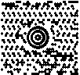

Lukem.net nie jest już aktualizowany. Przeczytaj ostatni wpis »
Dwuwymiarowe kody kreskowe – także i w Polsce?
16.08.2008, 21:55 MobileNa Zooomr, a także od niedawna przy każdym logo Google pojawiają się niewielkie kwadraciki kojarzące się z grubsza z kodami kreskowymi. Postanowiłem dzisiaj zgłębić temat i zaspokoić ciekawość na temat tej egzotycznej nowinki, która – jak informuje DI – niebawem może być dostępna także i u nas.
Google i Zooomr używają dwóch różnych rodzajów kodów. Ten pierwszy należy do rodziny Data Matrix, rozwijanej przez firmę Semacode. Składa się z czarnych i białych pól ułoonych w kwadrat lub prostokąt – reprezentują one określony układ bitów, za pomocą którego można zakodować tekst lub nie przetworzone dane. Rozmiary takich kodów mieszczą sie w przedziałach od 8×8 do 144×144, co umożliwia “umieszczenie” na kilku milimetrach kwadratowych nawet 2 kb informacji (np. numeru seryjnego na niewielkich elementach elektronicznych).
UPDATE: Pomyliłem się, nazywając znaczek przy logo Google kodem. Dziękuję Kobe za zwrócenie uwagi.
Z kolei twórcy Zooomr.com zastosowali kody QR. Rozpoznać je można po charakterystycznych kwadratach z wypełnieniem w środku. W Japonii są najczęściej stosowanym typem kodów, głównie do przechowywania adresów URL na wizytówkach, plakatach czy znakach.
Alternatywnym rozwiązaniem jest MaxiCode opracowany przez firmę kurierską UPS pod kątem towarów w ruchu. O ile rozpoznawalną cechą QR Code są kwadraty, w MaxiCode ich miejsce zajmują moduły w kształcie sześciokątów, które otaczają centralną część zwaną wzorem wyszukiwania – przypominającą nieco tarczę do rzutek.
 Każdy z tych kodów wymaga oczywiście skanera. A ten może być zaimplementowany chociażby w telefonie komórkowym posiadającym aparat – i tu zaczyna się cały “jazz” związany z potencjalnymi zastosowaniami tych kodów. Semacode, dla przykładu, proponuje aplikację służącą do skanowania i generowania kodów, które prowadzą do stron profili na Facebooku – a to tylko propozycja jedna z wielu.
W Polsce kody kreskowe (zwane, nie wiadomo dlaczego, fotokodami) są w fazie testów. Mimo to można “bawić” się kodami już teraz – w sieci dostępne są zarówno generatory, jak i dekodery, np. Kaywa Reader czy SnapABar. Ten pierwszy zamierzam wkrótce testować.
Czy to się przyjmie i będzie przydatne? Z pewnością tkwi w tym potencjał komercyjny i użytkowy, ale wątpię, by dwuwymiarowe kody były kiedykolwiek stosowane w Polsce na taką skalę, jak w Japonii. Sam chętnie bym to wykorzystał (przypominają mi się czasy, kiedy robiłem zdjęcia ogłoszeniom na uczelnianej tablicy ogłoszeń), gdyby tylko bardziej się rozpowszechniło. Tyle tylko, że pod względem “ztechnicyzowania” trudno mnie nazwać “szarym użytkownikiem” – a to o nich głównie chodzi.
Polecam też wpis KRoNa o dwuwymiarowych kodach kreskowych oraz prezentację o kodach QR.
Tagi: data matrix, fotokody, kody 2d, qr-code, semacode
Dodaj ten wpis: Wykop Delicious Blip Flaker Facebook Twitter
Zobacz także
Komentarze do wpisu
-
Michał _kUtek_ Kuciński16.08.2008, 21:59
Na tv.wp.pl skanując kod można dostać powiadomienie o interesującym filmie czy innym wydarzeniu telewizyjnym. :)
Całkiem ciekawa sprawa. -
Lukem16.08.2008, 22:12
O, tego nie wiedziałem. Jak znajdę działający czytnik na telefonie (Kaiwa?), to
zacznę korzystać.Zmieniłem zdanie, jak zobaczyłem że nadal trzeba wysyłać SMS Premium…
-
kosa16.08.2008, 22:25
Miałem ostatnio okazję sprawdzić, jak to działa w procesie produkcyjnym.
Co ciekawe, mimo teoretycznej zdolności korekcyjnej rzędu kilkunastu procent wcale nie jest tak dobrze. Z tego co się dowiedziałem, drukuje się to dużo gorzej niż typowe barkody, a bardzo dużo zależy od powierzchni i samego procesu nanoszenia. Jeśli materiał jest dobry, to nie ma problemu, ale niestety nie zawsze jest tak różowo.
Trochę szkoda, bo pomysł jest moim zdaniem bardzo dobry – stosunkowo dużo danych z teoretycznie wysoką zdolnością korekcyjną (nit tylko detekcyjną) to jest coś. -
Feanor16.08.2008, 22:44
Hmm, widziałem ostatnio gdzieś pierwszy typ tych kodów… Chyba na jakimś rachunku, albo na czymś takim.
-
kayo16.08.2008, 22:47
Tyle że z LCD trudno jest zrobić fotkę… interferencje przeszkadzają – testowane za pomocą Kaywa
-
Lukem16.08.2008, 22:49
Póki co nie mogę uruchomić żadnej z wersji Kaywa na moim K310i (mojego telefonu nie ma na liście). Próbowałem z K300i oraz jednego z Walkmanów – zamiast działającego programu dostaję biały ekran.
UPDATE: Snapabar u mnie działa, zczytałem już kilka kodów z monitora CRT, potem pobawię się z kodami EAN-13 (te umieszczane na różnych produktach).
-
Kobe17.08.2008, 0:13
Sprostowanie odnośnie Google – to nie jest kod matrycowy tylko chiński znak odnoszący się do igrzysk (nie wiem co dokładnie oznacza). Natomiast na Zooomr nie mogę się ich dopatrzeć.
-
Lukem17.08.2008, 20:03
kayo: To prawda, jednak nie jest to niemożliwe – Snap’a‘bar oraz Kaywa (którą udało mi się w końcu uruchomić) radziły sobie z kodami na ekranie mojego laptopa (nie zawsze, ale udawało się). Zresztą zamierzam poświęcić oddzielny wpis dekoderom, ukaże się niedługo.
Kobe: Słuszna uwaga (zwłaszcza że jak na kod ten kwadracik jest zupenie nieczytelny), poprawię to. A oto przykład QR-kodu na Zooomr.
-
Graziu17.08.2008, 21:28
w poznaniu mozna kupowac bilety mpk za pomoca aplikacji java w telefonie komorkowym.
co w tym takiego? aplokacja java generuje nam taki kodzik, a kochany pan kanar skanuje go i sprawdza waznosc itd.. -
rad18.08.2008, 1:35
@Feanor: rachunek z Orange? :)
-
Zen Vantalye18.08.2008, 9:20
„nie wiadomo dlaczego, fotokodami”
Ja pierwszy raz zauważyłem takie określenie przy ulotce między innymi z grami z Orang i była nawet darmowa aplikacja. -
Nazon18.08.2008, 12:12
A ja się zastanawiałem po co barcode scanner w Nokii N95…
Nawet działa ;) -
Clou18.08.2008, 14:52
ten kod kreskowy (typ 1) jest stosowany w Polsce od dość dawna na dowodach rejestracyjnych samochodów. Czytniki do nich mają w urzędach i np w stacjach kontroli pojazdów.
-
Lukem18.08.2008, 21:13
Clou: Też ostatnio to zauważyłem, ale tam stosują Aztec.
-
Piro29.08.2008, 13:38
A jakim czytnikiem można odczytać kod Aztec i MaxiCode?
-
Programy do odczytu kodów 2D - Łukasz “Lukem” Wójcik9.02.2009, 13:26
[...] ostatnio o dwuwymiarowych kodach kreskowych, które w różnych postaciach zyskują (albo nawet już zyskały) na popularności. Przez ostatnie [...]
Od 21.08.2009 r. możliwość komentowania wpisów została wyłączona.
Krótko i zwięźle
o mnie i o blogu Nazywam się Łukasz Wójcik. Strona ta była swego czasu moim sieciowym poligonem. Od sierpnia 2009 r. funkcjonuje jako archiwum wpisów. Więcej o mnie znajdziesz na mojej stronie domowej.
Nazywam się Łukasz Wójcik. Strona ta była swego czasu moim sieciowym poligonem. Od sierpnia 2009 r. funkcjonuje jako archiwum wpisów. Więcej o mnie znajdziesz na mojej stronie domowej.
Archiwum
historia wpisów na blogu- Wrzesień 2009
- Sierpień 2009
- Lipiec 2009
- Czerwiec 2009
- Maj 2009
- Kwiecień 2009
- Marzec 2009
- Luty 2009
- Styczeń 2009
- Grudzień 2008
- Listopad 2008
- Październik 2008
- Wrzesień 2008
- Sierpień 2008
- Lipiec 2008
- Czerwiec 2008
- Maj 2008
- Kwiecień 2008
- Marzec 2008
- Luty 2008
- Styczeń 2008
- Grudzień 2007
- Listopad 2007
- Październik 2007
- Wrzesień 2007
- Sierpień 2007
- Lipiec 2007
- Czerwiec 2007
- Maj 2007
- Kwiecień 2007
- Marzec 2007
- Styczeń 2007
Kategorie
co Cię interesuje?Blogroll
lubię i polecamMiniblog
#PolandwantsJB (2) 19.07.2009 r.
Drogie Polki i drodzy Polacy. Nie przenoście zwyczajów rodem z blogów Onetu na Twittera. Zamiast bezsensownie spamować międzynarodowy serwis i wyrabiać sobie i innym wątpliwą renomę, napiszcie maile do tych swoich Jonas Brothers albo zwróćcie się do nich bezpośrednio. Dziękuję za uwagę.
Egzystencjalne #8 (3) 17.07.2009 r.
W całej tej wojnie o publiczne media uwiera mnie jeden fakt. W okresie wakacyjnym większość telewizji (prywatne też, ale teraz nie o nich mowa) serwuje powtórki wszystkiego, co im się nawinie pod rękę i jeszcze się nadaje do odtworzenia. Ciekawy jestem dlaczego zamiast płacić abonament, nie można wysłać im kserokopii dowodów wpłat z zeszłego roku.
Nowy hosting (5) 12.07.2009 r.
Od kilkudziesięciu godzin blog jest serwowany z nowego miejsca – Linuxpl.com. Przerwa w działaniu byłaby krótsza gdyby nie OVH i Firefox, które wspólnie odmówiły mi szybkiego odświeżenia i rozpropagowania nowych DNSów. Jednak wszystko wskazuje na to, że operacja się udała, a pacjent (czyt. blog) działa nieco szybciej.